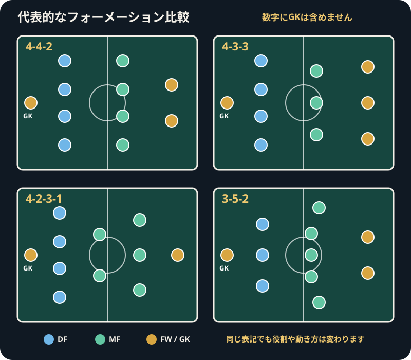

Football Formations Guide
サッカーのフォーメーションとは？数字の意味と代表的な形を解説
フォーメーションは、選手がピッチ上でどのように並ぶかを数字で表したものです。試合の出発点を理解する目安ですが、選手は動き続けるため、実際の配置は攻撃と守備で変化します。
フォーメーションとは何か
フォーメーションは、主にディフェンダー、ミッドフィールダー、フォワードの人数と基本位置を整理した表記です。チームがどのエリアに人数を置き、どのように攻守を組み立てようとしているかを見る入口になります。
ただし、表記は選手を固定する枠ではありません。ボールの位置、相手の動き、得点状況によって、選手の立ち位置や役割は絶えず変わります。
4-4-2などの数字の読み方
数字は自陣ゴール側から順に、ディフェンダー、ミッドフィールダー、フォワードの人数を表すのが一般的です。4-4-2なら、ディフェンダー4人、ミッドフィールダー4人、フォワード2人という基本配置です。
通常、ゴールキーパーは数字に含めません。4-2-3-1のように数字が4つある場合は、ミッドフィールドや前線をさらに複数の段に分けて表しています。

4-4-2の基本的な特徴
4人のディフェンダー、4人のミッドフィールダー、2人のフォワードを配置する形です。縦と横の距離をそろえやすく、2人のフォワードが協力して攻撃や守備を始める形として使われます。
一方で、中盤の並べ方やサイド選手の役割によって実際の特徴は大きく変わります。中央を厚くするか、幅を広く使うかはチームごとに異なります。
4-3-3の基本的な特徴
4人のディフェンダー、3人のミッドフィールダー、3人のフォワードを置く形です。前線の左右に選手を配置しやすく、ピッチの幅を使った攻撃や前方からの守備につなげる形として使われます。
中盤3人の役割は、1人を後方に置く場合と1人を前方に置く場合などで変わります。表記が同じでも、ボールの進め方や守り方が同じとは限りません。
4-2-3-1の基本的な特徴
4人のディフェンダーの前に2人、その前に3人、最前線に1人を置く形です。後方の2人が守備やパス回しを支え、前方の3人が最前線の選手をサポートする配置として使われます。
2人の中央選手が同じ高さに並ぶとは限らず、片方が前へ出ることもあります。前方の3人も、中央とサイドを入れ替えながら動く場合があります。
3-5-2の基本的な特徴
3人のディフェンダー、5人のミッドフィールダー、2人のフォワードを置く形です。左右の選手が広い範囲を担当し、中盤中央に複数の選手を配置する形として使われます。
守備時には左右の選手が下がって5人の守備ラインに見えることもあります。サイドの負担や中央の役割分担は、相手や試合展開によって変わります。
攻撃時と守備時で形は変化する
攻撃時にはディフェンダーが中盤へ進んだり、サイドの選手が高い位置を取ったりします。守備時には全体が自陣へ下がり、前線の選手が中盤に加わることもあります。
そのため、試合前に示されたフォーメーションと、試合中に見える形が違っていても不自然ではありません。ボールを持っているチームと持っていないチームを分けて見ると理解しやすくなります。
同じ表記でも役割や配置は異なる
同じ4-3-3でも、サイドのフォワードがタッチライン近くに立つ場合と中央へ入る場合があります。ミッドフィールダーが守備を優先するか、相手ゴール前へ進むかによっても試合の見え方は変わります。
フォーメーションの数字だけで戦術を断定せず、選手同士の距離、パスを受ける位置、守備を始める場所まで確認することが大切です。
最強のフォーメーションが一つに決まらない理由
どの形にも、使いやすいエリアと調整が必要なエリアがあります。選手の特徴、相手の配置、試合の目的によって適した形は変わるため、数字だけで優劣は決まりません。
大切なのは、選手が役割を共有し、攻撃と守備の切り替えに合わせて配置を調整できることです。試合中に別の形へ変えることも、戦術の一部です。
観戦時に注目するポイント
- ゴールキックや試合再開時に、選手の基本的な並びを見る
- 攻撃時に幅を取る選手と、中央へ入る選手を確認する
- ボールを失った直後に、どの形へ戻るかを見る
- フォーメーションの数字ではなく、選手同士の距離にも注目する
- 交代や得点後に配置がどう変わったか比較する